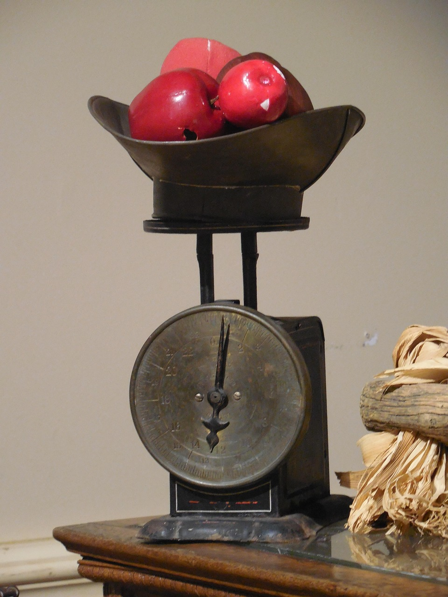

経済ニュース解説
7〜9月期の名目GDPは
693兆円
高市氏が語る700兆円には
届いていません。
5年前と比べると
2021年の同時期から
20.9%
名目GDPは増えました。

でも、実質では
物価の変動を除いた実質GDPの増加は
4.6%
わずかこれだけです。
名目 vs 実質
名目と実質では、
4倍以上の差があります。
名目 20.9%
実質 4.6%
伸びの正体
名目が伸びた分の多くは、
物価上昇によるものです。
物価を除くと、実感は多くありません。
生活の実感
給料や年金の増え方は、
名目ほど大きくありません。
「実質」で見ることが大切です。
保存して、12月8日の
2次速報と見比べてください。
名目と実質、
どちらが実感に近いですか？
コメントで教えてください。